VxRail Architecture and Troubleshooting
- VxRail Architecture and Troubleshooting
- VxRail Architecture
- Inspecting VIB files
- Inspecting Java Class Files
- Upgrades
- Troubleshooting Docker
- Adding Nodes
- Disappearing Browse Button
- Troubleshooting Script 15_setup_node.sh execution error
- Log Info
- Fixing Half Upgrade
- vCenter Logs
- Altbootbank
- Add nodes NIC config page
- Add Node Error
- Error Node
- General Error
- Redeploying VxRail Manager
- Logs
- Helpful Commands
- Helpful KB Articles
- VxRail API Info
VxRail Architecture
Most meaningful information on VxRail can be gleaned by reverse engineering the update package. There are three files in the update package of particular interest:
bundles/vxrail-mystic-lcm-7.0.202.rpmvxrail-system.zipVXRAIL_7.0.200-17911444.zip
vxrail-mystic-lcm-7.0.202.rpm
The mystic LCM process governs all upgrades. Any code related to the upgrade seems to be part of this process. RPMs are just archives and you can unarchive this file with 7-zip and take a look at its contents for any debugging desired.
vxrail-system.zip
Defines all the baselines available in JSON format.
VXRAIL_7.0.200-17911444.zip
This file contains all the files for VxRail that aren't associated with the upgrade subsystem.
Inspecting VIB files
There's a good chance you may want to be able to look inside VIB files. VIB files use a proprietary compression technology. You can get the type by opening the file in a hex editor and inspecting the headers:
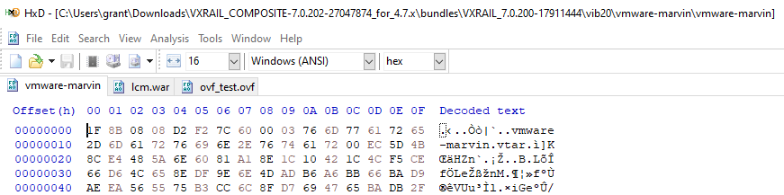
On any ESXi host you can use the vmtar program to open these with the command: vmtar -x <INPUT_VMTAR_FILE> -o <OUTPUT>.tar. The output will be a regular tar file which you can then open with tar xvf <OUTPUT>.tar
Inspecting Java Class Files
Most of the Java I saw was contained in the vmware-marvin file or in the LCM Marvin RPM.
I was wrestling with the error:
web.log: ERROR [tomcat-http--48] com.emc.mystic.manager.commons.emc.webutil.LocaleUtil LocaleUtil.getBundleMessage:198 - No en_US resource bundle for ExpansionValidation with key <SERIAL_NUMBER>
I was able to find the offending file in question at VXRAIL_COMPOSITE-7.0.202-27047874_for_4.7.x\bundles\vxrail-mystic-lcm-7.0.202\vxrail-mystic-lcm-7.0.202-27047874.noarch\usr\lib\vmware-marvin\marvind\webapps\lcm\WEB-INF\lib\lcm-module-7.0.202\com\vce\lcm\emc (that's post decompression of the vmware-marvin file inside the VIB).
I find that compressing the three core files for VxRail and searching them with grep for keywords from the error messages was pretty effective for locating what I wanted. In my case the following got me what I wanted for the above error:
(base) grant@DESKTOP-2SV1E9O:/mnt/c/Users/grant/Downloads/VXRAIL_COMPOSITE-7.0.202-27047874_for_4.7.x/bundles/vxrail-mystic-lcm-7.0.202/vxrail-mystic-lcm-7.0.202-27047874.noarch$ grep -inr 'resource bundle' ./*
Binary file ./usr/lib/vmware-marvin/marvind/webapps/lcm/WEB-INF/lib/lcm-module-7.0.202/com/vce/lcm/emc/LocaleUtil.class matches
I used the program JD Project to decompile the Java bytecode in question and it worked quite well. I was able to search the decompiled bytecode normally and find the offending function:
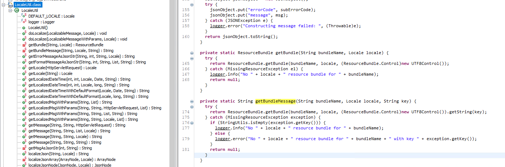
which then allowed me to determine that this error message was actually erronious and just a product of VxRail trying and failing to localize an error message related to disk validation.
Upgrades
How Upgrades Work
During the upgrade process the old VxRail manager will have its IP and hostname removed and be shutdown while the new one assumes the previous manager's hostname and IP. Upgrades are performed with the service account you configured when you built VxRail - not root.
Failed Upgrade
If an upgrade fails midflight this typically leaves the cluster in a state where there are two VxRail managers. In my team's experience trying to resume the upgrade using the new VxRail manager leads to a host of issues.
Observed Errors
Specifically, we encountered the following errors:
VxRail Update ran into a problem...
Please refer to KB488889 article.
Failed to upload bundle: VXRAIL_COMPOSITE-SLIM-7.0.132-26894200_for_4.7x.zip: Failure occured in executing the checker: Pre-checking the version compatibility among components. General unexpected error occurs during getting the information of firmwares.. Please refer to the KB517433 article.
Error extracting upgrade bundle 7.0.132-26894200. Failed to upload bundle. Please refer to log for details.
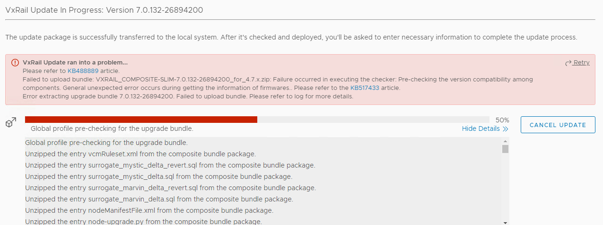
This error is covered by Dell EMC VxRail: LCM failed at Error extracting update bundle 7.0.132
We also saw:
Failure occurred while running an upgrade for bundle VXRAIL_COMPOSITE-SLIM-7.0.132-26894200_for_4.7.x.zip. The error message [DependencyError] VIB DEL_bootbank_dcism_3.6.0.2249-DEL.700.0.0.15843807 requires esx-version >= 7.0.0 but the requirement cannot be satisfied within the ImageProfile. Please refer to the log file for more details.
Fix Action
The most reliable way to fix a stuck upgrade is to revert to the old VxRail Manager and then run the upgrade again. You can do this by shutting down the new VxRail Manager, deleting it, and then logging into the previous VxRail Manager on the console, re-IPing it, give it it's previous hostname, and then restarting the upgrade.
Understanding Upgrades in ESXi
See What is the altbookbank Partition
Understanding the VxRail Update Bundle
At the top level the upgrade is governed and controlled by the file node-upgrade.py in the root of the upgrade bundle:
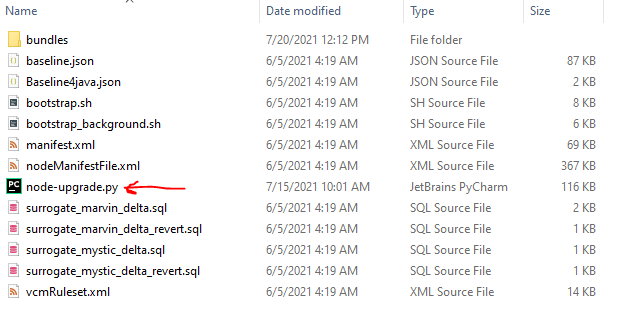
The bundles directory has all the possible files that could be installed with the update. The exact files which are installed vary by system. More on that in the section Manifest File and Update Order.
Manifest File and Update Order
The manifest file defines which VIBs will be installed based on system parameters and in what order they will be installed in. For example: ESXi:
<Package InstallOrder="100">
<ComponentType>ESXi</ComponentType>
<DisplayName>ESXi</DisplayName>
<Version>7.0.2</Version>
<Build>17867351</Build>
<File>bundles/ESXi-7.0.2-ep1_17867351-34777dce-standard.zip</File>
<Size>393239990</Size>
<HighestFormatVersionSupported>11</HighestFormatVersionSupported>
<UpgradeTime>5</UpgradeTime>
<RebootFlag>True</RebootFlag>
<Package InstallOrder="101">
<ComponentType>ESXi_No_Tools</ComponentType>
<DisplayName>VMware ESXi No Tools</DisplayName>
<Version>7.0.2</Version>
<Build>17867351</Build>
<File>bundles/ESXi-7.0.2-ep1_17867351-34777dce-upgrade-no-tools.zip</File>
<Size>207115430</Size>
<HighestFormatVersionSupported>11</HighestFormatVersionSupported>
<UpgradeTime>5</UpgradeTime>
<RebootFlag>True</RebootFlag>
</Package>
<Package InstallOrder="1001">
<ComponentType>ESXi_VIB</ComponentType>
<DisplayName>Dell iSM for vSphere 7</DisplayName>
<Version>3.6.0.2249</Version>
<Build>DEL.700.0.0.15843807</Build>
<SystemName>dcism</SystemName>
This is parsed by the function _parse_esxi_patch, _parse_install_vib, and _parse_update_firmware in node-upgrade.py on line 1381, 1454, and 1492:
def _parse_esxi_patch(self, element):
task = {
'type': "esxi_patch",
'name': "Install ESXi VMware patch",
'async': False,
'visible': True,
}
task['install_order'] = int(element.get('InstallOrder'))
task['args'] = self._extract_args(element, [
'ComponentType',
'DisplayName',
'Version',
'Build',
'File',
'Size',
'HighestFormatVersionSupported',
])
return task
---SNIP---
def _parse_install_vib(self, element):
task = {
'type': "install_vib",
'async': False,
'visible': True,
'package_type': 'vib',
}
task['name'] = "Install %s" % element.find('DisplayName').text
task['install_order'] = int(element.get('InstallOrder'))
task['args'] = self._extract_args(element, [
'ComponentType',
'DisplayName',
'Version',
'Build',
'SystemName',
'File',
'Size',
'ReplaceTargetInfo/ReplaceTarget/SystemName',
])
component_type = task['args'].get('ComponentType', '')
display_name = task['args'].get('DisplayName', '')
if equals_ignore_case(display_name, 'VxRail VIB') or \
equals_ignore_case(component_type, 'VXRAIL_'):
task['args']['SystemName'] = "vmware-marvin"
pkg_file = task['args'].get('File', '')
file_path = os.path.join(self._bundle_dir, pkg_file)
vlcm_bundle_info = self._vlcm_bundle_info(file_path)
if vlcm_bundle_info:
task['package_type'] = 'component'
task['component_name'] = vlcm_bundle_info[0]
task['component_version'] = vlcm_bundle_info[1]
return task
def _parse_update_firmware(self, element):
task = {
'type': "update_firmware",
'async': True,
'visible': True,
'runtime_check': False,
}
task['name'] = "Update %s" % element.find('DisplayName').text
task['install_order'] = int(element.get('InstallOrder'))
task['args'] = self._extract_args(element, [
'ComponentType',
'DisplayName',
'Version',
'Build',
'File',
'Size',
])
nic_models = self._extract_target_models(element, 'TargetNicModelInfo')
component_models = self._extract_target_models(
element, 'TargetComponentModelInfo')
fw_models = nic_models + component_models
if fw_models:
task['args']['FirmwareModels'] = fw_models
else:
task['args']['FirmwareModels'] = None
return task
These functions are used to create tasks which are stored in the required_tasks variable:
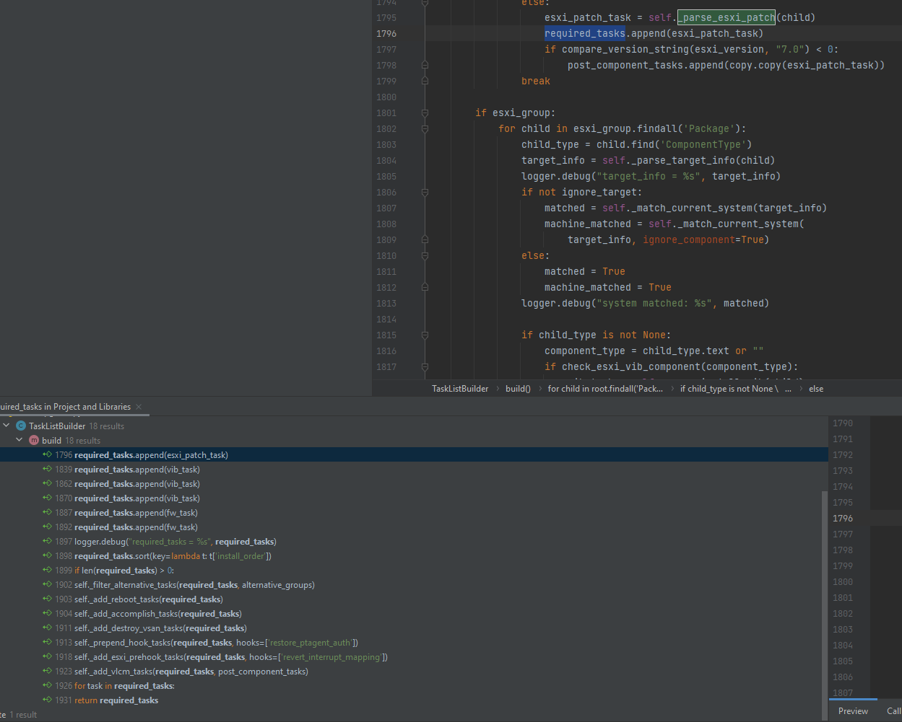
After all tasks are added to required tasks they are sorted with a lambda function on line 1898:
required_tasks.sort(key=lambda t: t['install_order'])
Subsequently it is safe to assume a linear sort on the integer value. We can use this to diagnose any problems we encounter with install order.
Troubleshooting Docker
Restarting a Container
You can add and remove a container with docker service scale func_lockbox=0 && docker service scale func_lockbox=1
Checking Swarm Status
Use docker info to get the swarm info and docker node ls to list the nodes
vcluster202-vxm:~ # docker info
Client:
Context: default
Debug Mode: false
Server:
Containers: 110
Running: 53
Paused: 0
Stopped: 57
Images: 43
Server Version: 20.10.9-ce
Storage Driver: overlay2
Backing Filesystem: extfs
Supports d_type: true
Native Overlay Diff: true
userxattr: false
Logging Driver: json-file
Cgroup Driver: cgroupfs
Cgroup Version: 1
Plugins:
Volume: local
Network: bridge host ipvlan macvlan null overlay
Log: awslogs fluentd gcplogs gelf journald json-file local logentries splunk syslog
Swarm: active
NodeID: gvqywccvm7g1qcbhud1kej1y5
Is Manager: true
ClusterID: 3uj8bybr66y3edkgp4txgmhse
Managers: 1
Nodes: 1
Default Address Pool: 169.254.170.0/24
SubnetSize: 24
Data Path Port: 4789
Orchestration:
Task History Retention Limit: 5
Raft:
Snapshot Interval: 10000
Number of Old Snapshots to Retain: 0
Heartbeat Tick: 1
Election Tick: 10
Dispatcher:
Heartbeat Period: 10 years
CA Configuration:
Expiry Duration: 10 years
Force Rotate: 1
Autolock Managers: false
Root Rotation In Progress: false
Node Address: 127.0.0.1
Manager Addresses:
127.0.0.1:2377
Runtimes: io.containerd.runc.v2 io.containerd.runtime.v1.linux oci runc
Default Runtime: runc
Init Binary: docker-init
containerd version: 5b46e404f6b9f661a205e28d59c982d3634148f8
runc version:
init version:
Security Options:
apparmor
seccomp
Profile: default
Kernel Version: 5.3.18-24.96-default
Operating System: SUSE Linux Enterprise Server 15 SP2
OSType: linux
Architecture: x86_64
CPUs: 4
Total Memory: 11.69GiB
Name: vcluster202-vxm
ID: XFEN:HBJA:CCKR:7CGG:QKXR:DDQP:ZEB3:YPOW:NAUC:AASS:3WM7:3A2F
Docker Root Dir: /var/lib/docker
Debug Mode: false
Registry: https://index.docker.io/v1/
Labels:
Experimental: false
Insecure Registries:
127.0.0.0/8
Live Restore Enabled: false
WARNING: No swap limit support
vcluster202-vxm:~ # docker node ls
ID HOSTNAME STATUS AVAILABILITY MANAGER STATUS ENGINE VERSION
gvqywccvm7g1qcbhud1kej1y5 * vcluster202-vxm Ready Active Leader 20.10.9-ce
Check for a List of Services
Each container on VxRail runs as a separate service. You can check their status with docker service ls.
vcluster202-vxm:~ # docker service ls
ID NAME MODE REPLICAS IMAGE PORTS
r4mawp339y88 func_alertmanager replicated 1/1 infra/prom/alertmanager:1.8.9
iduap6ujbho1 func_api-gateway replicated 1/1 infra/nginx_gateway_vxrail:1.8.14
5e18xm020k0f func_auth-service replicated 1/1 microservice/auth-service:1.8.13
j4pg14v6ajts func_cacheservice replicated 1/1 infra/redis:1.8.11
5e1q0w6v2exg func_cms-service replicated 1/1 microservice/cms-service:1.8.31
i4xpa8ltrla0 func_configservice replicated 1/1 infra/infra-config-service:1.8.10
uma1pjrkwjcq func_do-cluster replicated 1/1 do-main/do-cluster:1.8.26
uprraqe4lxo4 func_do-ecosystem replicated 1/1 do-main/do-ecosystem:1.8.26
0bpnsjy617yx func_do-eservices replicated 1/1 do-main/do-eservices:1.8.26
uaza36n6v9hl func_do-host replicated 1/1 do-main/do-host:1.8.26
jby3wca4pgxh func_do-kgs replicated 1/1 do-main/do-kgs:1.8.26
7nh07m0qnn10 func_do-network replicated 1/1 do-main/do-network:1.8.26
ta846rozl38e func_do-serviceability replicated 1/1 do-main/do-serviceability:1.8.26
yczljgv2hfki func_do-storage replicated 1/1 do-main/do-storage:1.8.26
tizxv31eqr6z func_do-vm replicated 1/1 do-main/do-vm:1.8.26
pnwq69rtx8b9 func_do-vxrail-system replicated 1/1 do-main/do-vxrail-system:1.8.26
pescqbk5gdm6 func_event-history-service replicated 1/1 microservice/event-history-service:1.8.18
uvj4grv92xjx func_event-service replicated 1/1 microservice/event-service:1.8.18
i1ajjwa20o2h func_faas-swarm replicated 1/1 infra/openfaas/faas-swarm:1.8.9
xdnl8mbbfnhw func_gateway replicated 1/1 infra/openfaas/gateway:1.8.9
w7yz4wdlurgx func_hsm replicated 1/1 microservice/hsm:1.8.25
txlipzyfxe5k func_infra-scale-service replicated 1/1 infra/infra-scale-service:1.8.8
hrzxht5zp33u func_kgs-service replicated 1/1 microservice/kgs-service:1.8.9
iweqxas2urpn func_lockbox replicated 1/1 microservice/lockbox:1.8.10
q75sa2hvxc0z func_lockservice replicated 1/1 infra/infra-lock-service:1.8.8
zd10d8q5vmml func_logging replicated 1/1 infra/logging:1.8.9
nob97ajl4wjl func_ms-day1-bringup replicated 1/1 microservice/ms-day1-bringup:1.8.21
339zceysq1w7 func_ms-day2 replicated 1/1 microservice/ms-day2:1.8.40
vwofhpygnrvz func_nano-service replicated 1/1 microservice/nano-service:1.8.21
ekm0s9o6fse3 func_nats replicated 1/1 infra/nats-streaming:1.8.9
o9ft5wqvkgyq func_node-service replicated 1/1 microservice/node-service:1.8.31
q9ewku1t3xjy func_prometheus replicated 1/1 infra/prom/prometheus:1.8.9
om3gislgsh82 func_property-collector replicated 1/1 do-main/property-collector:1.8.26
pkhsz674xtde func_queue-worker replicated 1/1 infra/openfaas/queue-worker:1.8.9
anmzrcv2plzy func_rcs-service replicated 1/1 microservice/rcs-service:1.8.11
t16j0wln8w0s func_serviceregistry replicated 1/1 infra/gcr.io/etcd-development/etcd:1.8.9
rny34tgzu7jq func_storage-service replicated 1/1 microservice/storage-service:1.8.16
sbc1n8rr25n3 func_tracing replicated 1/1 infra/tracing:1.8.9
vdf4hdtl957a func_vlcm replicated 1/1 microservice/vlcm:1.8.23
dkfjjajjx8tj func_vxdoctor-service replicated 1/1 microservice/vxdoctor-service:1.8.18
rsr9plg95qhw func_wfservice replicated 1/1 infra/workflow_engine:1.8.10
You can check the details of a specific service with docker service inspect --pretty <SERVICE>
vcluster202-vxm:~ # docker service inspect --pretty func_do-storage
ID: yczljgv2hfkiou1zh6liq6tbr
Name: func_do-storage
Labels:
com.docker.stack.image=do-main/do-storage:1.8.26
com.docker.stack.namespace=func
Service Mode: Replicated
Replicas: 1
UpdateStatus:
State: paused
Started: 6 months ago
Message: update paused due to failure or early termination of task qgjut6lu088orf8dmi8r3xxt8
Placement:
UpdateConfig:
Parallelism: 1
On failure: pause
Monitoring Period: 5s
Max failure ratio: 0
Update order: stop-first
RollbackConfig:
Parallelism: 1
On failure: pause
Monitoring Period: 5s
Max failure ratio: 0
Rollback order: stop-first
ContainerSpec:
Image: do-main/do-storage:1.8.26
Env: API_RESOURCES=["v1/storage:do-storage/v1/storage"] REGISTERED=true SERVICE_LAYER=do SERVICE_NAME=do-storage SERVICE_PORT=5000 SERVICE_TYPE=micro TRACING_HOST=tracing TRACING_SERVICE_NAME=do-storage
User: app:475
Mounts:
Target: /vxm_cert
Source: /etc/vmware-marvin/ssl
ReadOnly: false
Type: bind
Target: /certificate
Source: /var/lib/vmware-marvin/trust
ReadOnly: false
Type: bind
Target: /service_data
Source: /var/lib/vxrail/do_storage/data
ReadOnly: false
Type: bind
Resources:
Limits:
Memory: 1GiB
Networks: func_functions
Endpoint Mode: vip
Healthcheck:
Interval = 30s
Retries = 10
StartPeriod = 1m0s
Timeout = 1m0s
Tests:
Test = CMD-SHELL
Test = curl -f http://localhost:5000/do-storage/v1/storage/health-check || exit 1
Adding Nodes
Version Compatibility Matrix: Link
Make sure before you try to do anything with adding nodes that you verify the versions are mutually compatible.
Troubleshooting
We bumped into several errors while attempting to add nodes and they varied in type. One of the errors we encountered was when adding the node the interface for the VxRail plugin failed entirely. We were able to fix it with the following process:
- Take a snapshot of VxM
psql -U postgres vxrail -c "DELETE FROM system.operation_status WHERE state='IN_PROGRESS';"- enable advanced mode by changing it in /var/lib/vmware-marvin/lcm_advanced_mode.properties
- Change the contents of /var/lib/vmware-mariv to
{"state":"NONE","vc_plugin_updated":false,"deployed_for_public_api":false} - Restart Marvin with
system restart vmware-marvin
In one instance we were able to clear all problems by restarting all nodes in the cluster, the VxRail manager, and vCenter. After a full reboot of everything, a series of general errors we had been receiving during validation cleared.
How Adding Nodes Works During Cluster Construction
All nodes after being RASR have a fully built vSAN disk group. During the initial cluster construction VxRail will select a primary node and then add it to the cluster. On every subsequent node it will delete that node's vSAN disk group and then add it to the cluster's existing disk group.
Disappearing Browse Button
- Take a snapshot of VxM
- psql -U postgres vxrail -c "DELETE FROM system.operation_status WHERE state='IN_PROGRESS';"
- enable advanced mode by change it in /var/lib/vmware-marvin/lcm_advanced_mode.properties
- Change the contents of /var/lib/vmware-mariv to {"state":"NONE","vc_plugin_updated":false,"deployed_for_public_api":false}
- Result
system restart vmware-marvin
Troubleshooting Script 15_setup_node.sh execution error
Node 3 Password Change
- Somehow 192.168.0.172 changed iDRAC passwords overnight. Last I left it, it was in a reboot loop
RASR process fails with "Script 15_setup_node.sh execution error"
Both 192.168.0.171 and 192.168.0.172 are failed with "Script 15_setup_node.sh execution error". I confirmed they both had failed to generate disk mapping.
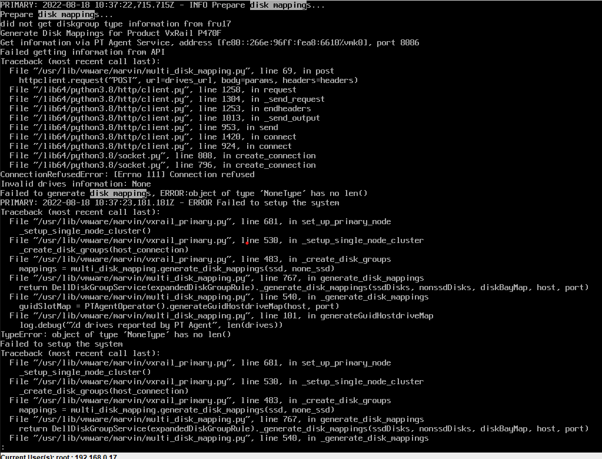
This does not exactly match the kb but it does appear to be fatal.
RASR on 192.168.0.172
- I ran with no DUP install
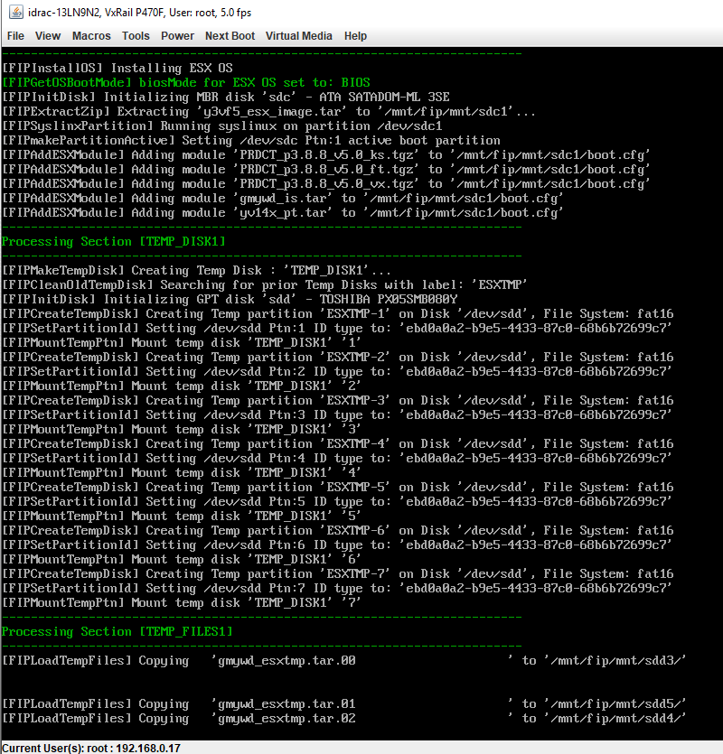
- Copying these temp files is taking hours. They're only 12 GB
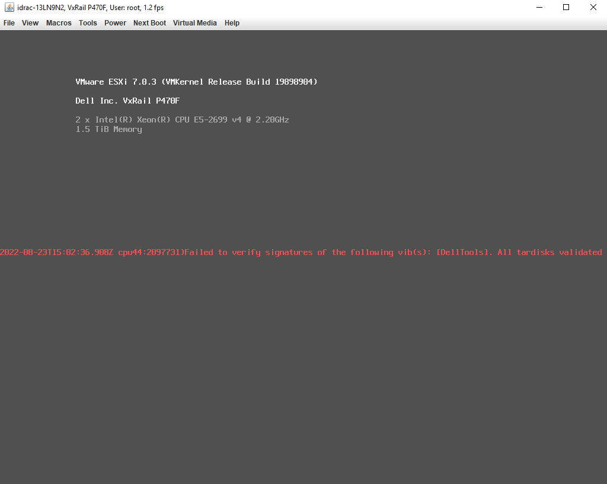
- Same problem
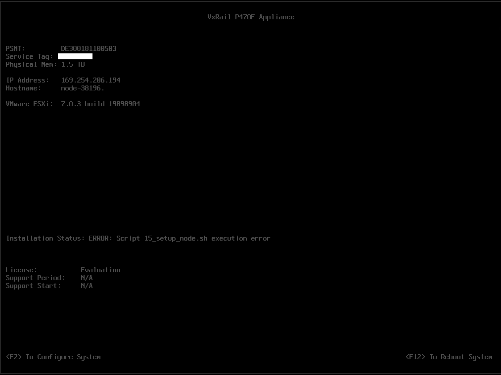
Debugging error
The error looks like https://www.dell.com/support/kbdoc/en-th/000193618?lang=en
- For starters my fist.log was in /scratch instead of /mnt
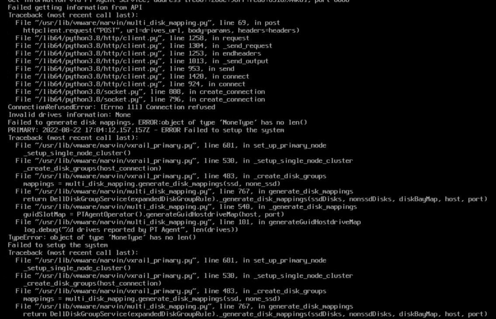
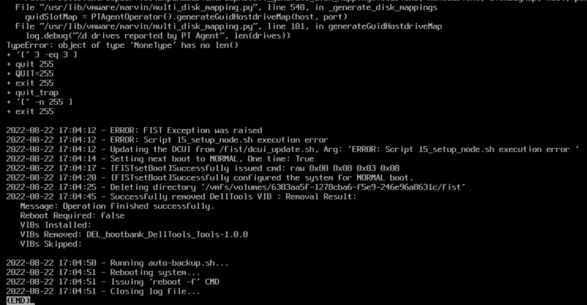
- The observed 15_setup_node.sh is in:
[root@fedora media]# grep -Ro 15_setup* .
grep: ./release/gmywd_is.tar: binary file matches
See 15_setup_node.sh
The referenced vmware-marvin seems to be a VIB
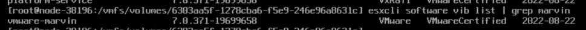
The failed post is here:
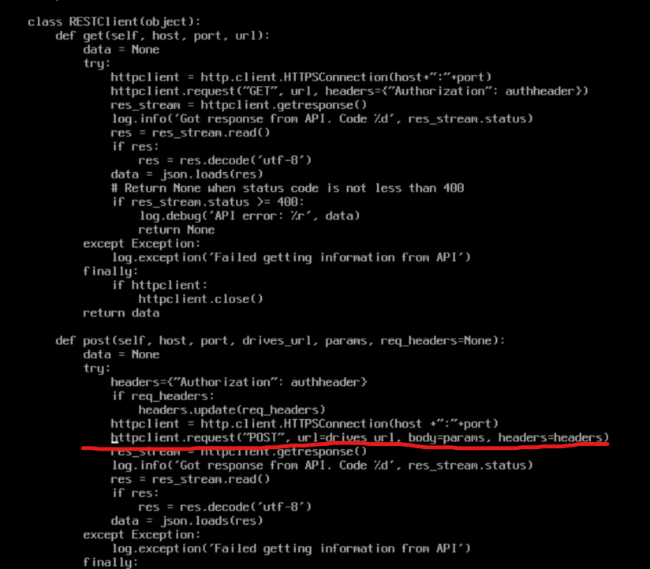
I can't tell if this error is related but in another error this function failes:
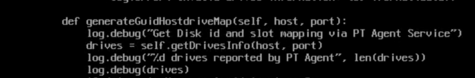
drives is none. Whatever is populating self.getDrivesInfo(host, port) isn't working.
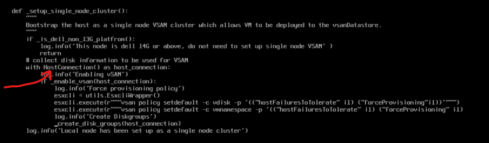
Whatever this is in vxrail_primary.py (line 530) HostConnection is not returning something valid. If we know what that is we can debug manually on the box. Moreover, this function is called is_dell_non_13G_platform but this is a P470F - which IS a 13G platform.
Log Info
lcm-web.log - Shows upgrade related info web.log - combined web output
Fixing Half Upgrade
Roll back to previous VxRail manager, then use it to complete the upgrade.
Uses ESXi management account for updates Uses PSC log
vCenter Logs
Altbootbank
You can load the old version with shift+r
Add nodes NIC config page
When you hit https://<host>/ui/vxrail/rest/vxm/private/system/cluster-hosts?$$objectID=urn:vmomi:ClusterComputeResource:domain<ID>&lang=en-us you should get back the existing hosts in the cluster with their hostname, model, serial_number, and vmnics
https://<HOST>/ui/vxrail/rest/vxm/private/system/available-hosts?$filter=serial_number%20in%20(SERIAL,SERIAL)&$$objectId=urn:vmomi:ClusterComputeResource:domain-<ID>&lang=en-us should get you the two hosts you are going to add
Add Node Error
"Could not find NSX-T network information" Http failure response for https://<address>/ui/vxrail/rest/vxm/private/cluster/network/nsxt???objectId=urn:vmomi:ClusterComputeResource:domain-ID=en-US: 404 OK
Error Node
Validation Errors
Disk Grouping Error (JKSLH63) Error occurs when validating disk group on host JKSLH63
web.log: ERROR [tomcat-http--48] com.emc.mystic.manager.commons.emc.webutil.LocaleUtil LocaleUtil.getBundleMessage:198 - No en_US resource bundle for ExpansionValidation with key JKSLH63
General Error
web.log: [WARN] com.vce.commons.config.ConfigServiceImpl$NotFoundHandler ConfigServiceImpl$NotFoundHandler.handleNotFound:114 - provided key is not present: [404, {"message":"404 Not Found: bandwidth_throttling_level does not exist"}]
Redeploying VxRail Manager
Note: My testing was done on VxRail 7.0.320
- Go to Edit Settings on your existing VxRail Manager and check its existing networking. There should be two networks. Make note of what they are as you will need these settings later. They are probably something like
vCenter Server Network-<uuid>andVxRail Manager-<uuid>. - Make note of the existing VxRail manager's IP address.
- Log into the existing VxRail Manager. Run
cat /var/lib/vmware-marvin/config-initial.json | jq | less. This is the current settings for VxRail Manager. I suggest you back this up and use it for your answers to the script but this is not required. You will need to backup the following files in this directory: - manifest.xml
- vcmRuleset.xml
- nodeManifestfile.xml
- node-upgrade.py
- baseline.json
- Power down the existing VxRail Manager.
- Import the new VxRail Manager. The values for the import are specific to the user except the networking. When selecting the networking for the new VxRail Manager there will be two networks. Match these to what you saw in the original VxRail Manager.
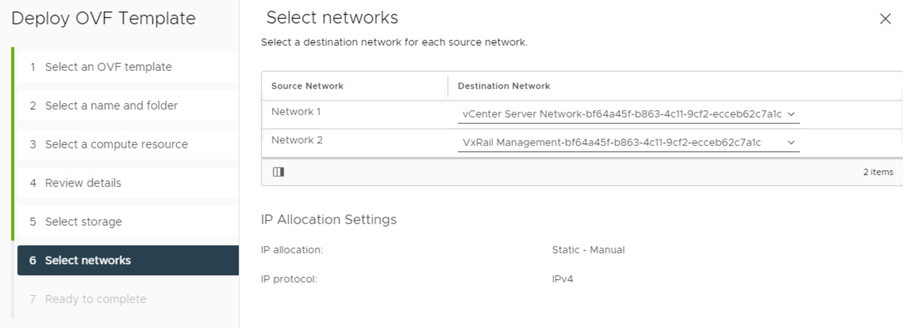 - Before powering on your VxRail Manager you will need to change the guest operating system. Right click the VM, edit settings, vm options, general options, change the operating system to SUSE Linux 12. After you power on this should autocorrect itself to the correct OS. If you don't do this you will get an error from vCenter saying the operating system is unsupported.
- Login to the VxRail Manager in the web console with root / Passw0rd!
- Set the ip address of eth0 with
ifconfig eth0 <IP>,ifconfig eth0 netmask <NETMASK>, andip route add 0.0.0.0/0 via <your_default_gateway> - If you do not already have it, contact Dell Support, ask for the script which comes with the KB Dell VxRail: Recover VxRail Manager VM from Scratch. Use credentials mystic / VxRailManager@201602! to upload the script to the IP address you established for VxRail Manager with WinSCP or other utility. Alternatively, you can copy and paste it over SSH with vim or your favorite editor.
- SSH to the VxRail Manager.
- Copy the files you backed up earlier (manifest.xml, vcmRuleset.xml, nodeManifestfile.xml, node-upgrade.py, baseline.json) to the
/var/lib/vmware-marvinfolder and change their owner totcserver:pivotal. - Next, you will need to enable root login for SSH. Run
vim /etc/ssh/sshd_config(or your favorite text editor). Change PermitRootLogin from no to yes. Save and restart sshd withsystemctl restart sshd - Finally, run the uploaded script
vxm_recovery_70x.py. Use the JSON you downloaded from the old VxRail Manager as a reference if you need it.- When asked if the VxRail Manager networking is configured as expected say no and then re-input all networking values.
- Domain Search Path: This is
top_level_domainin your JSON. - Is the Domain Name server external: check the field
is_internal_dnsin your JSON. WARNING it asks you if you domain server is external. If the value ofis_internal_dnsis false then make sure you answer yes to this question. - Domain Name Server IP address: Check the array
dns_servers. If you only have one just import the one DNS server IP. If there is more than one, split each ip with a,. - VxRail Manager hostname: This can be whatever you want it to be. You do not need to add the domain suffix here.
- NTP server IPs: see the array
ntp_serversin your JSON - Config root and mystic password of VxM: Select
yif you haven't done this already - Retrieve vRealize Log Insight Info -
nunless you have vRealize Log Insight - vCenter IP: See
vxrail_supplied_vc_ipin your JSON (this should be the IP address of your vCenter server) - vcenter FQDN: The FQDN of vCenter. Ex:
vcluster202-vcsa.demo.local - Admin account name: This is typically
administrator@something.something - Management account name: This is the VxRail manager account name. NOT root. You can find it here:
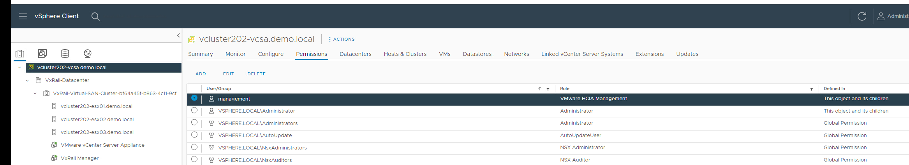. WARNING if authentication fails, you may have to add@localosdepending on your VxRail version. - Is PSC external: n
- Is customized vds created? N
- Can you confirm the management account info of the ESXi host: Answer yes. You can find the ESXi Management account info here:
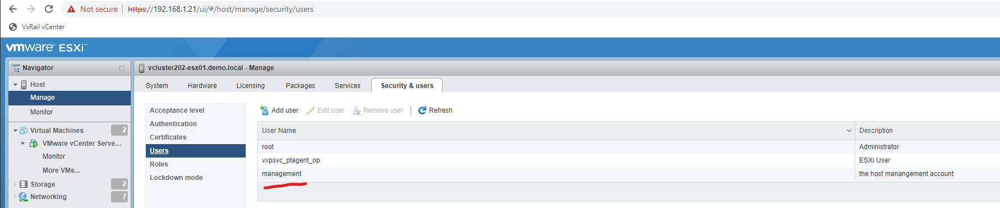
- On vCenter, browse to VxRail here:
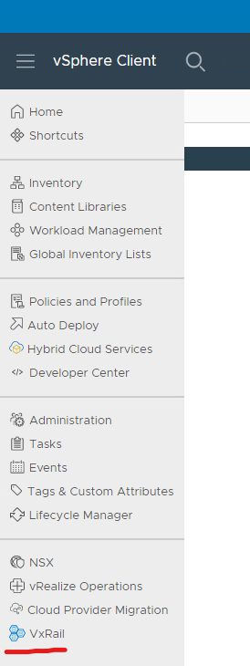 - Confirm that the dashboard populates. It is normal for it to have warnings if it cannot connect to the internet. If it is not working, the screen will be completely blank. Make sure if you alread had vCenter open that you refresh the page.
-
Next, we are going to simulate a shutdown. You do not actually need to shutdown the cluster, but executing the shutdown simulation will confirm everything is working as expected.
- In my instance I received the following:
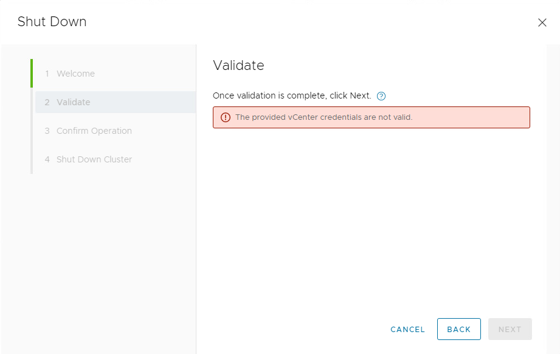 -
If you see this, it is more than likely a cert problem. You can confirm this by checking the
/var/log/microservice_log/short.term.logon the VxRail Manager. If this is indeed the problem you should see:2022-10-20-04:18:26 microservice.do-cluster "[2022-10-20 04:18:26,812: ERROR/MainProcess] Failed to login by session cookie!" 2022-10-20-04:18:26 microservice.do-cluster "Traceback (most recent call last):" 2022-10-20-04:18:26 microservice.do-cluster " File ""/home/app/worker/task/vcenter.py"", line 414, in login_by_session_cookie" 2022-10-20-04:18:26 microservice.do-cluster " username = si.content.sessionManager.currentSession.userName" 2022-10-20-04:18:26 microservice.do-cluster " File ""/usr/local/venv/lib64/python3.6/site-packages/pyVmomi/VmomiSupport.py"", line 700, in __call__" 2022-10-20-04:18:26 microservice.do-cluster " return self.f(*args, **kwargs)" 2022-10-20-04:18:26 microservice.do-cluster " File ""/usr/local/venv/lib64/python3.6/site-packages/pyVmomi/VmomiSupport.py"", line 520, in _InvokeAccessor" 2022-10-20-04:18:26 microservice.do-cluster " return self._stub.InvokeAccessor(self, info)" 2022-10-20-04:18:26 microservice.do-cluster " File ""/usr/local/venv/lib64/python3.6/site-packages/pyVmomi/StubAdapterAccessorImpl.py"", line 40, in InvokeAccessor" 2022-10-20-04:18:26 microservice.do-cluster " self._pc = si.RetrieveContent().propertyCollector" 2022-10-20-04:18:26 microservice.do-cluster " File ""/usr/local/venv/lib64/python3.6/site-packages/pyVmomi/VmomiSupport.py"", line 706, in <lambda>" 2022-10-20-04:18:26 microservice.do-cluster " self.f(*(self.args + (obj,) + args), **kwargs)" 2022-10-20-04:18:26 microservice.do-cluster " File ""/usr/local/venv/lib64/python3.6/site-packages/pyVmomi/VmomiSupport.py"", line 512, in _InvokeMethod" 2022-10-20-04:18:26 microservice.do-cluster " return self._stub.InvokeMethod(self, info, args)" 2022-10-20-04:18:26 microservice.do-cluster " File ""/usr/local/venv/lib64/python3.6/site-packages/pyVmomi/SoapAdapter.py"", line 1350, in InvokeMethod" 2022-10-20-04:18:26 microservice.do-cluster " conn.request('POST', self.path, req, headers)" 2022-10-20-04:18:26 microservice.do-cluster " File ""/usr/lib64/python3.6/http/client.py"", line 1291, in request" 2022-10-20-04:18:26 microservice.do-cluster " self._send_request(method, url, body, headers, encode_chunked)" 2022-10-20-04:18:26 microservice.do-cluster " File ""/usr/lib64/python3.6/http/client.py"", line 1337, in _send_request" 2022-10-20-04:18:26 microservice.do-cluster " self.endheaders(body, encode_chunked=encode_chunked)" 2022-10-20-04:18:26 microservice.do-cluster " File ""/usr/lib64/python3.6/http/client.py"", line 1286, in endheaders" 2022-10-20-04:18:26 microservice.do-cluster " self._send_output(message_body, encode_chunked=encode_chunked)" 2022-10-20-04:18:26 microservice.do-cluster " File ""/usr/lib64/python3.6/http/client.py"", line 1046, in _send_output" 2022-10-20-04:18:26 microservice.do-cluster " self.send(msg)" 2022-10-20-04:18:26 microservice.do-cluster " File ""/usr/lib64/python3.6/http/client.py"", line 984, in send" 2022-10-20-04:18:26 microservice.do-cluster " self.connect()" 2022-10-20-04:18:26 microservice.do-cluster " File ""/usr/local/venv/lib64/python3.6/site-packages/pyVmomi/SoapAdapter.py"", line 1039, in connect" 2022-10-20-04:18:26 microservice.do-cluster " http_client.HTTPSConnection.connect(self)" 2022-10-20-04:18:26 microservice.do-cluster " File ""/usr/lib64/python3.6/http/client.py"", line 1452, in connect" 2022-10-20-04:18:26 microservice.do-cluster " server_hostname=server_hostname)" 2022-10-20-04:18:26 microservice.do-cluster " File ""/usr/local/venv/lib64/python3.6/site-packages/gevent/_ssl3.py"", line 120, in wrap_socket" 2022-10-20-04:18:26 microservice.do-cluster " _session=session)" 2022-10-20-04:18:26 microservice.do-cluster " File ""/usr/local/venv/lib64/python3.6/site-packages/gevent/_ssl3.py"", line 308, in __init__" 2022-10-20-04:18:26 microservice.do-cluster " self.do_handshake()" 2022-10-20-04:18:26 microservice.do-cluster " File ""/usr/local/venv/lib64/python3.6/site-packages/gevent/_ssl3.py"", line 667, in do_handshake" 2022-10-20-04:18:26 microservice.do-cluster " self._sslobj.do_handshake()" 2022-10-20-04:18:26 microservice.do-cluster " File ""/usr/lib64/python3.6/ssl.py"", line 694, in do_handshake" 2022-10-20-04:18:26 microservice.do-cluster " match_hostname(self.getpeercert(), self.server_hostname)" 2022-10-20-04:18:26 microservice.do-cluster " File ""/usr/lib64/python3.6/ssl.py"", line 331, in match_hostname" 2022-10-20-04:18:26 microservice.do-cluster " % (hostname, dnsnames[0]))" 2022-10-20-04:18:26 microservice.do-cluster "ssl.CertificateError: hostname '192.168.1.20' doesn't match 'vcluster202-vcsa.demo.local'" 2022-10-20-04:18:26 microservice.do-cluster "[2022-10-20 04:18:26,816: INFO/MainProcess] Task worker.celery_task.rest_cluster.login_by_session_cookie[90e54bf5-a9d3-4d28-a76e-70fcbbe062cb] succeeded in 0.03339903799860622s: {'result': 'LOGIN_BY_SESSION_C OOKIE_FAIL'}" -
On the Vxrail manager, confirm that in /etc/hosts you have an entry for your vCenter. If not, add it.
- On vCenter as root run
mkdir -p /var/tmp/vmware && chmod 755 /var/tmp/vmware - Next run
/usr/lib/vmware-vmca/bin/certificate-manager.- Select option 8
- Do you wish to generate all certs using configuration file: n
- Enter your credentials
- You can leave everything to default until you get to Hostname. Here I used the FQDN for VCSA.
- For VMCA I used the shortname of VCSA
- When asked if you want to continue select yes. The script will run. This takes a while to run. For me it stopped at 85% for a long time. This appears to be normal.
- Grab cert_util.py and upload it to VxRail Manager.
- Run the script. If it fails saying No host configured run
curl -k -H "Content-Type: application/json" -X PUT --unix-socket /var/lib/vxrail/nginx/socket/nginx.sock -d '{"value": "false"}' http://127.0.0.1/rest/vxm/internal/configservice/v1/configuration/keys/certificate_verification_enable. This will disable cert checking for it. After you run that command, rerun the script and it should complete successfully.
- In my instance I received the following:
Logs
Generating Logs
If you want to get a full dump of all the logs associated with VxRail you can generate a dump by going to the VxRail plugin on vCenter, navigating to the support tab, and then clicking the generate log button.
VxRail Microservice (container) Logs
/var/log/microservice/vxrail-manager
RASR Process
The totality of the RASR process' output is stored in the images folder on the local datastore in fist.log.
Tomcat Logs
/var/log/marvin/tomcat/logs /var/log/mystic/web.log
Upgrade Logs
The LCM process handles upgrades.
It's logs are all in /var/log/mystic/lcm*.
You can also try checking the PSC log (haven't personally done this)
API Logs
These are on vCenter.
See VMWARE API Logs
Helpful Commands
See Helpful Commands
Helpful KB Articles
- https://www.dell.com/support/kbdoc/en-uk/000021742/dell-emc-vxrail-troubleshooting-guide-for-vxrail-micro-services-infrastructure
- https://www.dell.com/support/kbdoc/en-uk/000157667/dell-emc-vxrail-how-to-query-vxrail-cluster-configuration-data-in-7-0-010-or-higher
- https://www.dell.com/support/kbdoc/en-us/000157715/dell-emc-vxrail-troubleshooting-guide-for-upgrading-vxrail-manager-to-7-0-010-or-higher
- https://www.dell.com/support/kbdoc/en-us/000157662/dell-emc-vxrail-how-to-get-or-update-management-account-in-vxrail-7-0-010-or-higher
- https://www.dell.com/support/kbdoc/en-us/000181759/dell-emc-vxrail-upgrading-vxrail-manager-to-7-0-x-release-failed-vcenter-plugin-no-loading
- https://www.dell.com/support/kbdoc/en-us/000181712/dell-emc-vxrail-how-to-update-vxrail-manager-without-lcm
VxRail API Info
See VMWare APIs